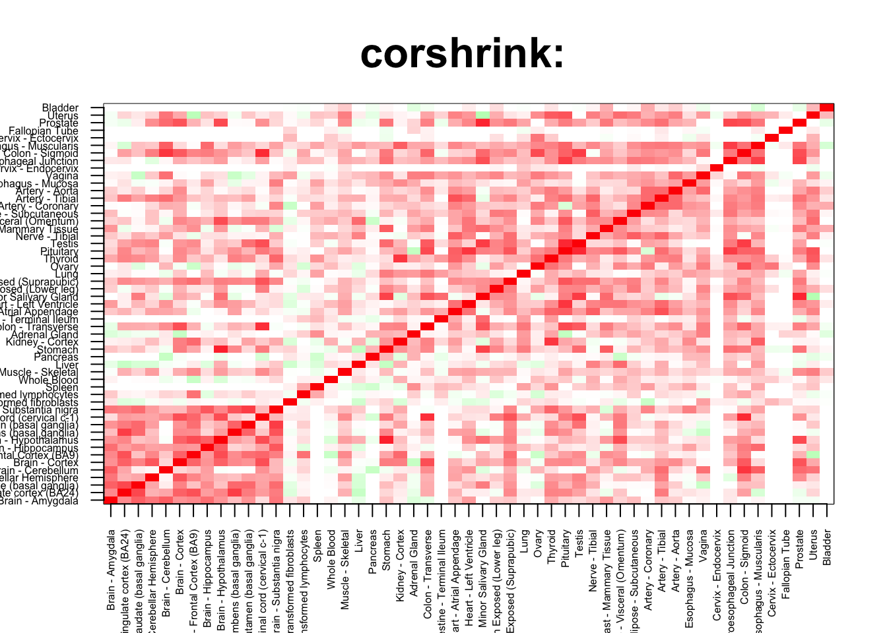

rm(list=ls())
corshrink_data <- get(load("../output/ash_cor_only_voom_pearson_normal_gtex_tissues.rda"))
cor_data <- get(load("../output/cor_tissues_non_ash_voom_pearson.rda"))common_samples <- get(load("../output/common_samples.rda"))
tissue_labels <- read.table(file = "../data/GTEX_V6/samples_id.txt")[,3]
#library(data.table)
#data <- data.frame(fread("../data/GTEX_V6/cis_gene_expression.txt"))
#matdata <- t(data[,-c(1,2)])
gene_names <- as.character(read.table(file = "../data/GTEX_V6/gene_names_GTEX_V6.txt")[,1])
gene_names_1 <- as.character(sapply(gene_names, function(x) return(strsplit(x, "[.]")[[1]][1])))
U <- unique(tissue_labels)tab <- array(0, dim(corshrink_data)[3])
pituitary_testis_set <- match(c("Pituitary", "Testis"), U)
for(m in 1:dim(corshrink_data)[3]){
temp <- corshrink_data[pituitary_testis_set, pituitary_testis_set, m]
temp1 <- corshrink_data[order_index[-(1:13)], order_index[-(1:13)],m]
tab[m] <- median(temp[row(temp) > col(temp)]) - median(temp1[row(temp1) > col(temp1)])
}
ordering_high <- order(tab, decreasing = TRUE)[1:100]
ordering_low <- order(tab, decreasing = FALSE)[1:100]top_gene <- gene_names_1[ordering_high[1]]
col=c(rev(rgb(seq(1,0,length=1000),1,seq(1,0,length=1000))),
rgb(1,seq(1,0,length=1000),seq(1,0,length=1000)))
image(as.matrix(corshrink_data[order_index,order_index, ordering_high[1]]),
col=col, main=paste0("corshrink: "), cex.main=2,
xaxt = "n", yaxt = "n", zlim=c(-1,1))
axis(1, at = seq(0, 1, length.out = 53), labels = U[order_index], las=2, cex.axis = 0.5)
axis(2, at = seq(0, 1, length.out = 53), labels = U[order_index], las=2, cex.axis = 0.5)
bottom_gene <- gene_names_1[ordering_low[1]]
col=c(rev(rgb(seq(1,0,length=1000),1,seq(1,0,length=1000))),
rgb(1,seq(1,0,length=1000),seq(1,0,length=1000)))
image(as.matrix(corshrink_data[order_index,order_index, ordering_low[1]]),
col=col, main=paste0("corshrink: "), cex.main=2,
xaxt = "n", yaxt = "n", zlim=c(-1,1))
axis(1, at = seq(0, 1, length.out = 53), labels = U[order_index], las=2, cex.axis = 0.5)
axis(2, at = seq(0, 1, length.out = 53), labels = U[order_index], las=2, cex.axis = 0.5)high_pituitary_testis_genes <- gene_names_1[ordering_high]
low_pituitary_testis_genes <- gene_names_1[ordering_low]
write.table(cbind.data.frame(high_pituitary_testis_genes), quote = FALSE, file = "../utilities/pituitary_testis/high_pituitary_testis.txt", row.names = FALSE, col.names = FALSE)
write.table(cbind.data.frame(low_pituitary_testis_genes), quote = FALSE, file = "../utilities/pituitary_testis/low_pituitary_testis.txt", row.names = FALSE, col.names = FALSE)tab <- read.delim("../utilities/pituitary_testis/pathway_high.tab")
head(cbind.data.frame(tab$pathway, tab$q.value), 10)## tab$pathway tab$q.value
## 1 Metallothioneins bind metals 0.0000573474
## 2 Response to metal ions 0.0000573474
## 3 Adipogenesis 0.0004408492
## 4 FoxO signaling pathway - Homo sapiens (human) 0.0004408492
## 5 Vitamin B12 Metabolism 0.0004408492
## 6 Mineral absorption - Homo sapiens (human) 0.0004408492
## 7 Interleukin-6 family signaling 0.0005458221
## 8 Lung fibrosis 0.0007900114
## 9 Oncostatin M Signaling Pathway 0.0007900114
## 10 Folate Metabolism 0.0007900114tab <- read.delim("../utilities/pituitary_testis/GO_high.tab")
head(cbind.data.frame(tab$term_name, tab$q.value), 10)## tab$term_name tab$q.value
## 1 animal organ regeneration 2.364786e-05
## 2 response to stress 2.160825e-05
## 3 negative regulation of cell death 2.515459e-04
## 4 response to cytokine 1.414960e-04
## 5 response to lipopolysaccharide 1.414960e-04
## 6 response to molecule of bacterial origin 1.549393e-04
## 7 regulation of cell death 2.227001e-04
## 8 response to extracellular stimulus 2.772592e-04
## 9 regulation of angiogenesis 2.829313e-04
## 10 response to zinc ion 2.829313e-04tab <- read.delim("../utilities/pituitary_testis/pathway_low.tab")
head(cbind.data.frame(tab$pathway, tab$q.value), 10)## tab$pathway
## 1 RORA activates gene expression
## 2 Circadian Clock
## 3 Gamma carboxylation, hypusine formation and arylsulfatase activation
## 4 RORA activates gene expression
## 5 Exercise-induced Circadian Regulation
## 6 BMAL1:CLOCK,NPAS2 activates circadian gene expression
## 7 glutathione-mediated detoxification
## 8 Attenuation phase
## 9 HSF1 activation
## 10 Rev-mediated nuclear export of HIV RNA
## tab$q.value
## 1 0.009024777
## 2 0.009024777
## 3 0.009024777
## 4 0.010024532
## 5 0.010024532
## 6 0.023741186
## 7 0.036221343
## 8 0.045722063
## 9 0.045722063
## 10 0.045722063tab <- read.delim("../utilities/pituitary_testis/GO_low.tab")
head(cbind.data.frame(tab$term_name, tab$q.value), 10)## tab$term_name tab$q.value
## 1 cellular detoxification of nitrogen compound 0.004507956
## 2 nitrobenzene metabolic process 0.004507956
## 3 detoxification of nitrogen compound 0.006166222
## 4 heat shock protein binding 0.008878955
## 5 xenobiotic catabolic process 0.087144735
## 6 glutathione binding 0.009839686
## 7 cellular catabolic process 0.031698556
## 8 oligopeptide binding 0.017278571
## 9 chromosomal part 0.035303169
## 10 regulation of skeletal muscle cell differentiation 0.124872508This R Markdown site was created with workflowr